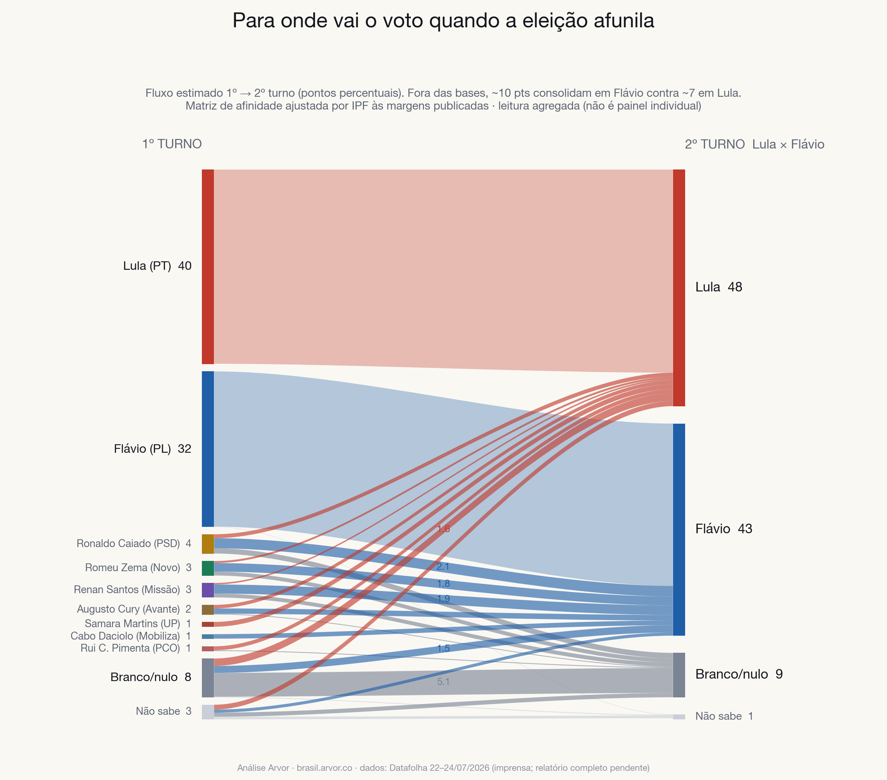

<!-- Bloco: Sankey transferência 1T→2T (Lula × Flávio) — datafolha_072026.html -->
<!-- Pré-relatório 24/07/2026. Validar contra crosstabs oficiais quando o PDF sair. -->
<!-- ESTILO DE PRE-VISUALIZACAO: o dossie final (docs/datafolha_072026.html) usa o
     CSS da casa — remova este bloco <style> ao colar la. Os src das imagens apontam
     para ../../../docs/img/…; na publicacao troque para img/datafolha_072026/…. -->
<style>
  body { margin: 0; background: #faf8f3; }
  .achado {
    max-width: 760px; margin: 0 auto; padding: 48px 24px 64px;
    font-family: "Inter", -apple-system, "Helvetica Neue", Arial, sans-serif;
    color: #14171d; line-height: 1.65; font-size: 17px;
  }
  .achado .kicker {
    text-transform: uppercase; letter-spacing: .14em; font-size: 12px;
    font-weight: 700; color: #b07d10; margin: 0 0 10px;
  }
  .achado h2 {
    font-family: "Fraunces", Georgia, "Times New Roman", serif;
    font-size: 34px; line-height: 1.15; margin: 0 0 18px; color: #14171d;
  }
  .achado p { margin: 0 0 16px; }
  .achado p.metodo {
    font-size: 14.5px; color: #5e6675; background: #ffffff;
    border: 1px solid #dde2ec; border-left: 4px solid #b07d10;
    border-radius: 8px; padding: 14px 16px;
  }
  .achado strong { color: #14171d; }
  .achado figure { margin: 26px 0 8px; }
  .achado figure img {
    width: 100%; height: auto; display: block; border-radius: 12px;
    border: 1px solid #dde2ec; box-shadow: 0 12px 34px rgba(18,24,33,.10);
    background: #fff;
  }
  .achado figcaption { font-size: 13.5px; color: #8b93a3; margin-top: 10px; }
  .achado ul.numeros { margin: 18px 0 0; padding: 0 0 0 20px; }
  .achado ul.numeros li { margin: 0 0 10px; }
</style>
<section class="achado" id="transferencia">
  <p class="kicker">Achado · transferência de voto</p>
  <h2>Para onde vai o voto quando a eleição afunila</h2>
  <p>
    No 1º turno, Lula tem <strong>40</strong> e Flávio <strong>32</strong>. Sobram
    <strong>26 pontos</strong> que não são de nenhum dos dois: 15 de candidatos do
    "terceiro caminho", 8 de branco/nulo e 3 de indecisos. No 2º turno, Lula sobe a
    48 (<strong>+8</strong>) e Flávio a 43 (<strong>+11</strong>). Ajustando uma matriz
    de afinidade às margens publicadas (IPF/mínima entropia cruzada), o voto disponível
    fora das bases consolida <strong>~10 × ~7 em favor de Flávio (1,5:1)</strong> —
    em junho a razão foi 2:1. A direção nunca muda; só a intensidade.
  </p>
  <p class="metodo">
    Hipóteses ideológicas do modelo: <strong>bases 100% fiéis</strong> — quem votou
    Flávio no 1º turno vota Flávio no 2º, integralmente (cruzamento de base seria ruído
    de pesquisa, não comportamento eleitoral); o mesmo vale para a base de Lula. Toda a
    transferência acontece no meio: Daciolo vai quase integral para Flávio; Samara, em
    totalidade para Lula; Cury é majoritariamente Flávio; e o branco/nulo do 2º turno é
    alimentado quase só por Caiado, Zema e Renan — que dão muito a Flávio, um pouco a
    Lula e anulam o resto.
  </p>
  <figure>
    
    <figcaption>
      Fluxo estimado 1º → 2º turno em pontos percentuais. Caiado transfere ~2,1 de 4
      para Flávio; Zema ~1,8 de 3; Renan ~1,9 de 3; Daciolo ~1,0 de 1; Cury ~1,1 de 2.
      A esquerda pequena (UP, PCO) deságua em Lula. Leitura agregada de corte
      transversal, não painel individual.
    </figcaption>
  </figure>
  <ul class="numeros">
    <li><strong>~55–65%</strong> dos votos de Caiado, Zema e Renan já são de Flávio no 2º turno — e Daciolo vai quase inteiro.</li>
    <li>Branco/nulo <strong>cresce</strong> de 8 para 9 no afunilamento — alimentado por Caiado, Zema e Renan: o eleitor da 3ª via de direita que não vai a Flávio prefere anular a votar Lula.</li>
    <li>Indecisos caem de 3 para 1 e se dividem quase ao meio (leve pró-Lula): o ganho de Flávio vem todo da direita pulverizada, não do indeciso.</li>
  </ul>
</section>
